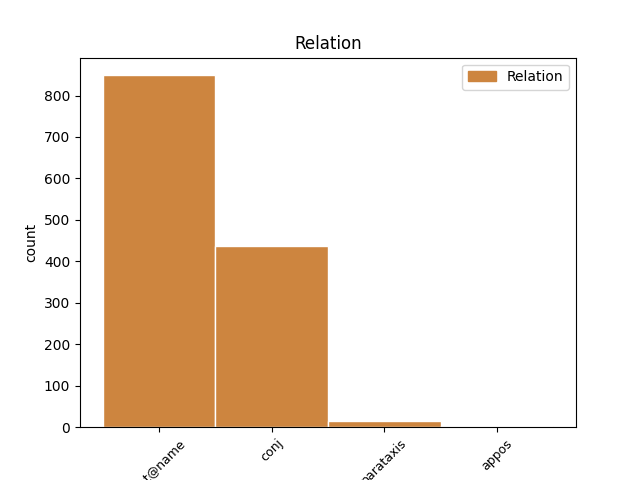
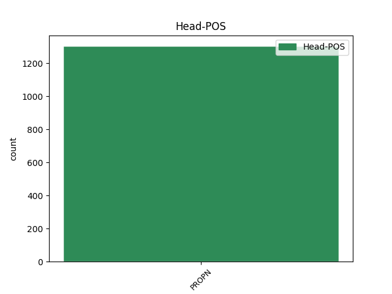
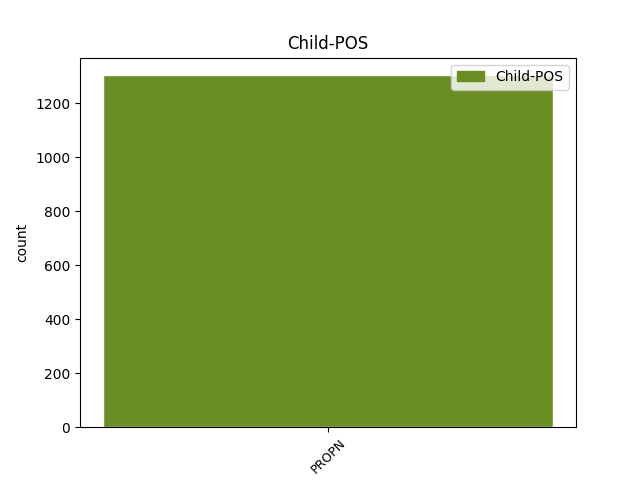

Distribution of features within this leaf



Agreement Rules sorted by frequency.
- When the dependent token is the flat multiword expression(flat@name) of the head token, and the head token is PROPN and the dependent token is PROPN.
1 Pie _ _ _ _ 0 _ _ _
2 pirmās _ _ _ _ 0 _ _ _
3 grupas _ _ _ _ 0 _ _ _
4 var _ _ _ _ 0 _ _ _
5 pieskaitīt _ _ _ _ 0 _ _ _
6 O. _ _ _ _ 0 _ _ _
7 Dankera _ _ _ _ 0 _ _ _
8 , _ _ _ _ 0 _ _ _
9 Alfrēda _ _ _ _ 0 _ _ _
10 Valdmaņa _ _ _ _ 0 _ _ _
11 , _ _ _ _ 0 _ _ _
12 Žaņa _ _ _ _ 0 _ _ _
13 Unāma _ _ _ _ 0 _ _ _
14 , _ _ _ _ 0 _ _ _
15 Fēliksa Fēlikss PROPN npmsg1 Case=Gen|Gender=Masc|Number=Sing 0 _ _ _
16 Cielēna Cielēns PROPN npmsg1 Case=Gen|Gender=Masc|Number=Sing 15 flat@name _ LvtbNodeId=a-z88-p34s1w16
17 atmiņas _ _ _ _ 0 _ _ _
18 . _ _ _ _ 0 _ _ _
1 Aptauja _ _ _ _ 0 _ _ _
2 bija _ _ _ _ 0 _ _ _
3 veikta _ _ _ _ 0 _ _ _
4 Rīgā _ _ _ _ 0 _ _ _
5 , _ _ _ _ 0 _ _ _
6 Jūrmalā _ _ _ _ 0 _ _ _
7 , _ _ _ _ 0 _ _ _
8 Jelgavā _ _ _ _ 0 _ _ _
9 , _ _ _ _ 0 _ _ _
10 Ventspilī _ _ _ _ 0 _ _ _
11 , _ _ _ _ 0 _ _ _
12 Liepājā _ _ _ _ 0 _ _ _
13 , _ _ _ _ 0 _ _ _
14 Valmierā _ _ _ _ 0 _ _ _
15 , _ _ _ _ 0 _ _ _
16 Cēsīs _ _ _ _ 0 _ _ _
17 , _ _ _ _ 0 _ _ _
18 Daugavpilī Daugavpils PROPN npfsl6 Case=Loc|Gender=Fem|Number=Sing 0 _ _ _
19 , _ _ _ _ 0 _ _ _
20 Ludzā Ludza PROPN npfsl4 Case=Loc|Gender=Fem|Number=Sing 18 conj _ LvtbNodeId=a-z91-p30s5w20|SpaceAfter=No
21 . _ _ _ _ 0 _ _ _
1 Seriālā _ _ _ _ 0 _ _ _
2 ienāks _ _ _ _ 0 _ _ _
3 arī _ _ _ _ 0 _ _ _
4 jauna _ _ _ _ 0 _ _ _
5 varone _ _ _ _ 0 _ _ _
6 Monika Monika PROPN npfsn4 Case=Nom|Gender=Fem|Number=Sing 0 _ _ _
7 ( _ _ _ _ 0 _ _ _
8 Inta Inta PROPN npfsn4 Case=Nom|Gender=Fem|Number=Sing 6 parataxis _ LvtbNodeId=a-p8869-p17s1w8
9 Tirole _ _ _ _ 0 _ _ _
10 ) _ _ _ _ 0 _ _ _
11 , _ _ _ _ 0 _ _ _
12 kura _ _ _ _ 0 _ _ _
13 ir _ _ _ _ 0 _ _ _
14 ne _ _ _ _ 0 _ _ _
15 tikai _ _ _ _ 0 _ _ _
16 sirsnīga _ _ _ _ 0 _ _ _
17 un _ _ _ _ 0 _ _ _
18 pozitīva _ _ _ _ 0 _ _ _
19 , _ _ _ _ 0 _ _ _
20 bet _ _ _ _ 0 _ _ _
21 arī _ _ _ _ 0 _ _ _
22 dzīves _ _ _ _ 0 _ _ _
23 pieredzes _ _ _ _ 0 _ _ _
24 bagāta _ _ _ _ 0 _ _ _
25 sieviete _ _ _ _ 0 _ _ _
26 . _ _ _ _ 0 _ _ _
1 Karloss _ _ _ _ 0 _ _ _
2 Čipa _ _ _ _ 0 _ _ _
3 ir _ _ _ _ 0 _ _ _
4 23 _ _ _ _ 0 _ _ _
5 gadus _ _ _ _ 0 _ _ _
6 jauns _ _ _ _ 0 _ _ _
7 mūziķis _ _ _ _ 0 _ _ _
8 , _ _ _ _ 0 _ _ _
9 kurš _ _ _ _ 0 _ _ _
10 šobrīd _ _ _ _ 0 _ _ _
11 dzīvo _ _ _ _ 0 _ _ _
12 un _ _ _ _ 0 _ _ _
13 studē _ _ _ _ 0 _ _ _
14 kompozīciju _ _ _ _ 0 _ _ _
15 Minhenē Minhene PROPN npfsl5 Case=Loc|Gender=Fem|Number=Sing 0 _ _ _
16 , _ _ _ _ 0 _ _ _
17 Vācijā Vācija PROPN npfsl4 Case=Loc|Gender=Fem|Number=Sing 15 appos _ LvtbNodeId=a-p9739-p2s1w17|SpaceAfter=No
18 . _ _ _ _ 0 _ _ _
Disagree Examples:
1 Izņemot _ _ _ _ 0 _ _ _
2 Daini Dainis PROPN npmsa2 Case=Acc|Gender=Masc|Number=Sing 0 _ _ _
3 Gaideli _ _ _ _ 0 _ _ _
4 ( _ _ _ _ 0 _ _ _
5 Jūens Jūens PROPN npmsn1 Case=Nom|Gender=Masc|Number=Sing 2 parataxis _ LvtbNodeId=a-p13848-p13s1w5|SpaceAfter=No
6 ) _ _ _ _ 0 _ _ _
7 un _ _ _ _ 0 _ _ _
8 Mārtiņu _ _ _ _ 0 _ _ _
9 Upenieku _ _ _ _ 0 _ _ _
10 ( _ _ _ _ 0 _ _ _
11 Rabs _ _ _ _ 0 _ _ _
12 ) _ _ _ _ 0 _ _ _
13 , _ _ _ _ 0 _ _ _
14 kuri _ _ _ _ 0 _ _ _
15 rada _ _ _ _ 0 _ _ _
16 iespaidu _ _ _ _ 0 _ _ _
17 par _ _ _ _ 0 _ _ _
18 dzīviem _ _ _ _ 0 _ _ _
19 , _ _ _ _ 0 _ _ _
20 reāliem _ _ _ _ 0 _ _ _
21 , _ _ _ _ 0 _ _ _
22 konkrētiem _ _ _ _ 0 _ _ _
23 cilvēkiem _ _ _ _ 0 _ _ _
24 ( _ _ _ _ 0 _ _ _
25 viņi _ _ _ _ 0 _ _ _
26 ir _ _ _ _ 0 _ _ _
27 zemnieki _ _ _ _ 0 _ _ _
28 , _ _ _ _ 0 _ _ _
29 kas _ _ _ _ 0 _ _ _
30 no _ _ _ _ 0 _ _ _
31 kapiem _ _ _ _ 0 _ _ _
32 piegādā _ _ _ _ 0 _ _ _
33 Frankenšteina _ _ _ _ 0 _ _ _
34 eksperimentiem _ _ _ _ 0 _ _ _
35 līķus _ _ _ _ 0 _ _ _
36 ) _ _ _ _ 0 _ _ _
37 , _ _ _ _ 0 _ _ _
38 pārējie _ _ _ _ 0 _ _ _
39 aktieri _ _ _ _ 0 _ _ _
40 ... _ _ _ _ 0 _ _ _
1 Izņemot _ _ _ _ 0 _ _ _
2 Daini _ _ _ _ 0 _ _ _
3 Gaideli _ _ _ _ 0 _ _ _
4 ( _ _ _ _ 0 _ _ _
5 Jūens _ _ _ _ 0 _ _ _
6 ) _ _ _ _ 0 _ _ _
7 un _ _ _ _ 0 _ _ _
8 Mārtiņu Mārtiņš PROPN npmsa1 Case=Acc|Gender=Masc|Number=Sing 0 _ _ _
9 Upenieku _ _ _ _ 0 _ _ _
10 ( _ _ _ _ 0 _ _ _
11 Rabs Rabs PROPN npmsn1 Case=Nom|Gender=Masc|Number=Sing 8 parataxis _ LvtbNodeId=a-p13848-p13s1w11|SpaceAfter=No
12 ) _ _ _ _ 0 _ _ _
13 , _ _ _ _ 0 _ _ _
14 kuri _ _ _ _ 0 _ _ _
15 rada _ _ _ _ 0 _ _ _
16 iespaidu _ _ _ _ 0 _ _ _
17 par _ _ _ _ 0 _ _ _
18 dzīviem _ _ _ _ 0 _ _ _
19 , _ _ _ _ 0 _ _ _
20 reāliem _ _ _ _ 0 _ _ _
21 , _ _ _ _ 0 _ _ _
22 konkrētiem _ _ _ _ 0 _ _ _
23 cilvēkiem _ _ _ _ 0 _ _ _
24 ( _ _ _ _ 0 _ _ _
25 viņi _ _ _ _ 0 _ _ _
26 ir _ _ _ _ 0 _ _ _
27 zemnieki _ _ _ _ 0 _ _ _
28 , _ _ _ _ 0 _ _ _
29 kas _ _ _ _ 0 _ _ _
30 no _ _ _ _ 0 _ _ _
31 kapiem _ _ _ _ 0 _ _ _
32 piegādā _ _ _ _ 0 _ _ _
33 Frankenšteina _ _ _ _ 0 _ _ _
34 eksperimentiem _ _ _ _ 0 _ _ _
35 līķus _ _ _ _ 0 _ _ _
36 ) _ _ _ _ 0 _ _ _
37 , _ _ _ _ 0 _ _ _
38 pārējie _ _ _ _ 0 _ _ _
39 aktieri _ _ _ _ 0 _ _ _
40 ... _ _ _ _ 0 _ _ _
1 26. _ _ _ _ 0 _ _ _
2 decembrī _ _ _ _ 0 _ _ _
3 grupa _ _ _ _ 0 _ _ _
4 " _ _ _ _ 0 _ _ _
5 Instrumenti _ _ _ _ 0 _ _ _
6 " _ _ _ _ 0 _ _ _
7 uzstāsies _ _ _ _ 0 _ _ _
8 Rēzeknē Rēzekne PROPN npfsl5 Case=Loc|Gender=Fem|Number=Sing 0 _ _ _
9 , _ _ _ _ 0 _ _ _
10 Latgales _ _ _ _ 0 _ _ _
11 vēstniecībā _ _ _ _ 0 _ _ _
12 " _ _ _ _ 0 _ _ _
13 Gors Gors PROPN npmsn1 Case=Nom|Gender=Masc|Number=Sing 8 appos _ LvtbNodeId=a-p17457-p5s1w13|SpaceAfter=No
14 " _ _ _ _ 0 _ _ _
15 . _ _ _ _ 0 _ _ _
1 KNAB _ _ _ _ 0 _ _ _
2 šo _ _ _ _ 0 _ _ _
3 lietu _ _ _ _ 0 _ _ _
4 sāka _ _ _ _ 0 _ _ _
5 2010. _ _ _ _ 0 _ _ _
6 gadā _ _ _ _ 0 _ _ _
7 , _ _ _ _ 0 _ _ _
8 kad _ _ _ _ 0 _ _ _
9 vasarā _ _ _ _ 0 _ _ _
10 aizturēja _ _ _ _ 0 _ _ _
11 bijušo _ _ _ _ 0 _ _ _
12 " _ _ _ _ 0 _ _ _
13 Latvenergo _ _ _ _ 0 _ _ _
14 " _ _ _ _ 0 _ _ _
15 prezidentu _ _ _ _ 0 _ _ _
16 Kārli Kārlis PROPN npmsa2 Case=Acc|Gender=Masc|Number=Sing 0 _ _ _
17 Miķelsonu _ _ _ _ 0 _ _ _
18 , _ _ _ _ 0 _ _ _
19 viņa _ _ _ _ 0 _ _ _
20 vietnieku _ _ _ _ 0 _ _ _
21 Aigars Aigars PROPN npmsn1 Case=Nom|Gender=Masc|Number=Sing|Typo=Yes 16 conj _ CorrectForm=Aigaru|CorrectionType=Spelling|LvtbNodeId=a-p3735-p17s1w21
22 Meļko _ _ _ _ 0 _ _ _
23 , _ _ _ _ 0 _ _ _
24 kā _ _ _ _ 0 _ _ _
25 arī _ _ _ _ 0 _ _ _
26 AS _ _ _ _ 0 _ _ _
27 " _ _ _ _ 0 _ _ _
28 Sadales _ _ _ _ 0 _ _ _
29 tīkls _ _ _ _ 0 _ _ _
30 " _ _ _ _ 0 _ _ _
31 valdes _ _ _ _ 0 _ _ _
32 priekšsēdētāju _ _ _ _ 0 _ _ _
33 Ivaru _ _ _ _ 0 _ _ _
34 Liuziniku _ _ _ _ 0 _ _ _
35 un _ _ _ _ 0 _ _ _
36 viņa _ _ _ _ 0 _ _ _
37 vietnieku _ _ _ _ 0 _ _ _
38 Andreju _ _ _ _ 0 _ _ _
39 Stalažu _ _ _ _ 0 _ _ _
40 . _ _ _ _ 0 _ _ _
1 KNAB _ _ _ _ 0 _ _ _
2 šo _ _ _ _ 0 _ _ _
3 lietu _ _ _ _ 0 _ _ _
4 sāka _ _ _ _ 0 _ _ _
5 2010. _ _ _ _ 0 _ _ _
6 gadā _ _ _ _ 0 _ _ _
7 , _ _ _ _ 0 _ _ _
8 kad _ _ _ _ 0 _ _ _
9 vasarā _ _ _ _ 0 _ _ _
10 aizturēja _ _ _ _ 0 _ _ _
11 bijušo _ _ _ _ 0 _ _ _
12 " _ _ _ _ 0 _ _ _
13 Latvenergo _ _ _ _ 0 _ _ _
14 " _ _ _ _ 0 _ _ _
15 prezidentu _ _ _ _ 0 _ _ _
16 Kārli _ _ _ _ 0 _ _ _
17 Miķelsonu _ _ _ _ 0 _ _ _
18 , _ _ _ _ 0 _ _ _
19 viņa _ _ _ _ 0 _ _ _
20 vietnieku _ _ _ _ 0 _ _ _
21 Aigars Aigars PROPN npmsn1 Case=Nom|Gender=Masc|Number=Sing|Typo=Yes 0 _ _ _
22 Meļko _ _ _ _ 0 _ _ _
23 , _ _ _ _ 0 _ _ _
24 kā _ _ _ _ 0 _ _ _
25 arī _ _ _ _ 0 _ _ _
26 AS _ _ _ _ 0 _ _ _
27 " _ _ _ _ 0 _ _ _
28 Sadales _ _ _ _ 0 _ _ _
29 tīkls _ _ _ _ 0 _ _ _
30 " _ _ _ _ 0 _ _ _
31 valdes _ _ _ _ 0 _ _ _
32 priekšsēdētāju _ _ _ _ 0 _ _ _
33 Ivaru Ivars PROPN npmsa1 Case=Acc|Gender=Masc|Number=Sing 21 conj _ LvtbNodeId=a-p3735-p17s1w33
34 Liuziniku _ _ _ _ 0 _ _ _
35 un _ _ _ _ 0 _ _ _
36 viņa _ _ _ _ 0 _ _ _
37 vietnieku _ _ _ _ 0 _ _ _
38 Andreju _ _ _ _ 0 _ _ _
39 Stalažu _ _ _ _ 0 _ _ _
40 . _ _ _ _ 0 _ _ _